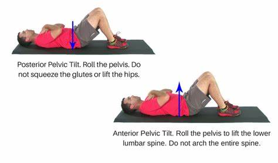
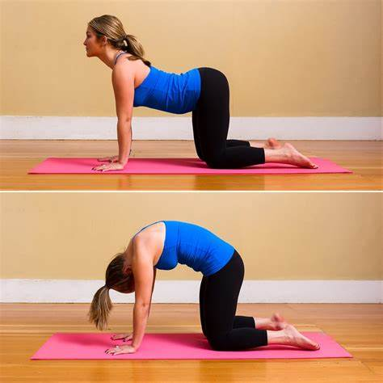
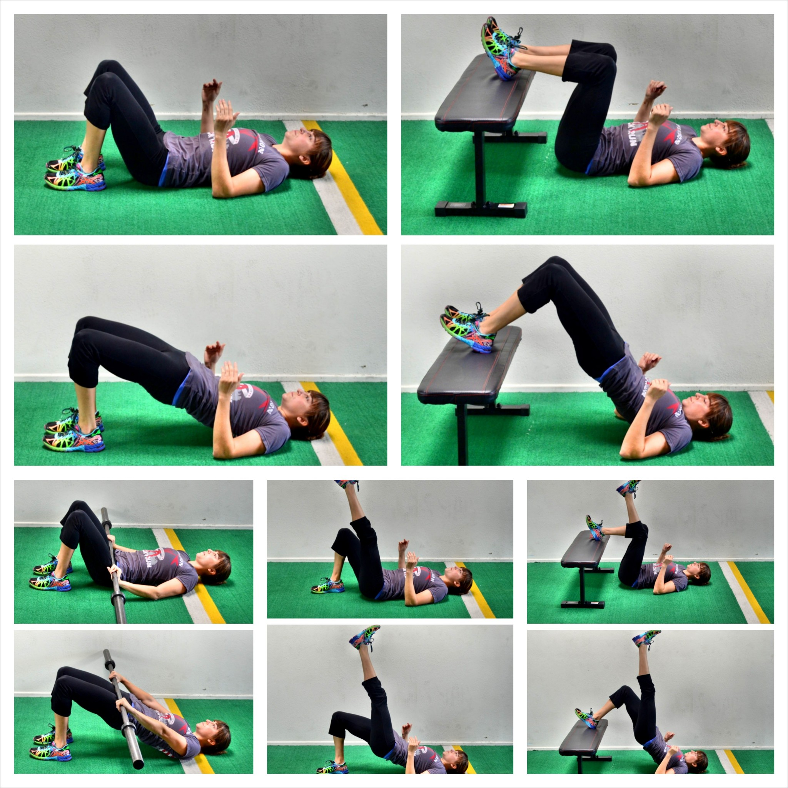
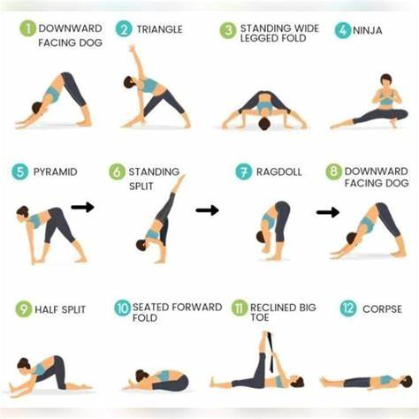
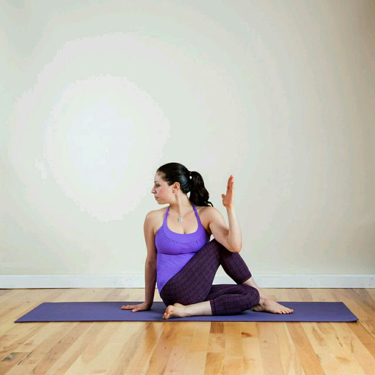
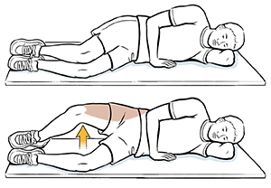

| # | Tip | Description |
|---|---|---|
| 1 | Maintain Good Posture | Sit up straight, avoid slouching. |
| 2 | Use Ice/Heat Therapy | Ice for swelling, heat for stiffness. |
| 3 | Strengthen Core | A strong core reduces back strain. |
| 4 | Stay Active | Avoid prolonged bed rest, do light walking. |
| # | Exercise | Description | Image |
|---|---|---|---|
| 1 | Pelvic Tilt | Lie on your back, tighten your core, and tilt your pelvis up slightly. |  |
| 2 | Cat-Cow Stretch | On all fours, arch your back (cow), then round it (cat). |  |
| 3 | Glute Bridge | Lie on your back, bend knees, lift hips up. |  |
| 4 | Hamstring Stretch | Lift one leg straight while lying down and hold with a towel. |  |
| 5 | Seated Spinal Twist | Cross one leg, twist torso gently to stretch lower back. |  |
| 6 | Side-Lying Clamshell | Lie on your side, lift top knee while keeping feet together. |  |